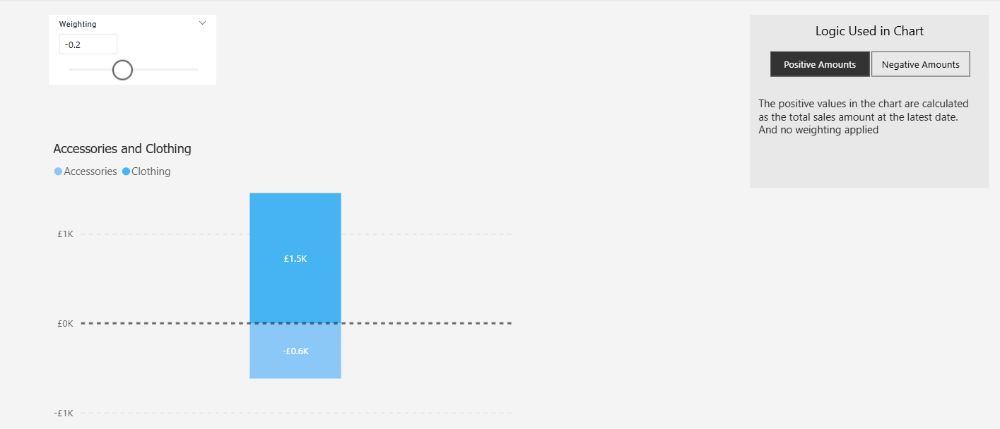
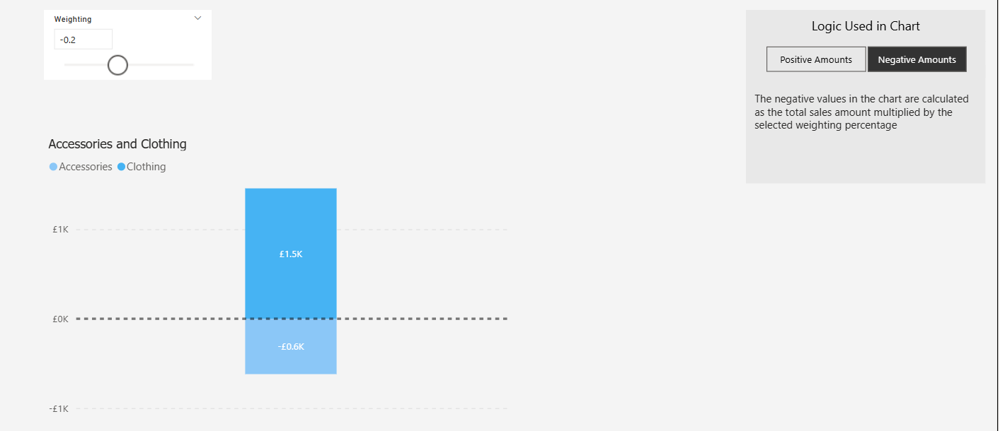

The Toolshed Manifesto
The data world is big and is growing all the time. With this the roles and careers are growing and evolving.
Do you ever struggle to keep up and understand how all these different roles fit together? I do, which is why I wanted to write this post to try and explain to myself the data landscape. And hopefully it will help others too.
The Premise
My mind immediately compared the data lifecycle to the production of wood from trees. So suppose that data teams made furniture rather than data products, how do the different roles interact?
Imagine a large workshop at the edge of a forest.
At one end sits a toolshed. Perfectly formed and meticulously organised. Every chisel, plane and saw sharpened and oiled and resting in its rightful place.
At the other end is a workbench. Alive with blueprints covered in sawdust and half-finished creations. Where ideas take shape and become something real.
Both ends are a hub of activity and are vital to the production of furniture. But the craftspeople inside see the world very differently.
The Keeper of the Toolshed (The Data Architect)
Their role is a keeper of order, guardian of logic and custodian of the system as a whole. To the data architect, the world is structure.
They care deeply that the right tool exists, that every instrument has a name, a home and a purpose.
Their satisfaction comes from harmony. Things like naming conventions, data models and governance frameworks all in perfect alignment.
They are the invisible force keeping chaos at bay ensuring that when the craftsperson reaches for a tool, it's where it should be, it's sharp and it's ready for use.
Their motto if they had one is: "A clean shed builds clean systems."
The Material Handler (The Data Engineer)
Their role is the hauler of raw materials and builder of supply lines.
The Data Engineer brings the timber. Vast logs of raw data hauled in from the surrounding forest of source systems.
They cut, clean and sort these into usable planks: pipelines, warehouses, data marts and tables.
They set up conveyor belts and pulleys that move material from source to storage to stage, ensuring craftspeople downstream are always busy.
Their pride lies in efficiency, in seeing data flow smoothly and reliably every time. Their risk lies in believing the job ends once the wood is stacked at the workshop door.
Their motto would be: "A good flow keeps the workshop alive."
The Machine Tuner (The Analytics Engineer)
Their role is acting as the bridge between the material and creation.
The Analytics Engineer tunes the tools themselves. They sharpen saws, oil gears, tighten components ensuring precision and repeatability.
They understand both the toolshed's order and the workshop's chaos constantly translating one into the other.
They build models and reusable components, creating the semantic layer that allows every report, dashboard or visual to have the same basis.
They are calibrators of truth, ensuring every measurement and metric means the same thing across the whole workshop.
Their motto would be: "Sharpen once, cut clean forever."
The Toolsman (The Data Analyst)
Their role is as a maker, the craftsperson who brings the story to life.
To the Data Analyst, they don't mind a little mess such as a pencil behind the ear or a chisel left on a workbench. The key for them is that creation and storytelling flows.
They build dashboards, interactions and visuals that are intuitive, beautiful and alive with meaning.
The Data Analyst values clarity and concern themselves with feel particularly from the end user's point of view. They're not afraid of a bit of sawdust and see it as the price of their work.
Their motto would be: "The tool is a means, the insight is the art."
The Blueprint Reader (The Business Analyst)
The Experimentalist (The Data Scientist)
The Inspector (The Tester)
The Foreman (The Team Leader)
The Patron (The Project Owner)
The Workshop's Philosophy
We just managed to succeed and the team celebrated, the "champagne" was out and there were backslaps aplenty.
I didn't feel great. I knew that we had dropped certain features late on, narrowed the scope and not fixed all the bugs just so we could get it released.
Everybody around me was happy and proud. And that dissonance got me wondering:
How can two groups of professionals look at the same outcome and see total opposites?
The answer lies in perspective and in which "league" they think they're playing in.
The Tell-Tale Signs of a National League Team
In technology, we don't have literal leagues but we do have stark divides in quality, ambition and craft.
Craft and robustness are invisible and are therefore de-prioritised in favour of activity. Shipping a feature on time is the trophy, even if it's bug-ridden and creates more support tickets than it solves. The 0-0 draw is a win.
Incentives At Play
This is not because craft and robustness are irrelevant or not thought about by the developers. It's to do with the incentive system consciously or subconsciously at play. If the reward and the acclaim are all tied in with shipping on time, the team will focus solely on that aim.
If today's result is the glory, why would they spend time developing strategies and systems when they can lump it long to the big man?
The Star Players
This incentive system brings common personalities to the fore:
The Speedboat
Praised for sheer speed even if they're running in circles. Movement beats progress. Leaves a load of technical debt and questionable practice in their wake.
The Theorist
Hailed as a tactical genius for whiteboard sessions that never translate well onto the pitch. Their ideas beat their execution.
The Technician
Celebrated for using complex, custom tools for simple jobs. Overengineers and hoards knowledge deliberately so seen as more adept than team mates. Slows the whole team down. Complexity over effectiveness.
The Morale Manager
This manager's primary metric is short-term team happiness.
They avoid tough technical decisions and healthy conflict acting as a social facilitator rather than a tactical leader. When losing a game, they clap their hands more furiously to try and gee the team up rather than look to make drastic changes.
They have no tactics board because today is the only time they think about. The future is not in their mind. There's little architectural vision, no principled guardrails, no system for developing the team's skills. So their only tactic is to keep everyone smiling and collaborating.
The Invisible Professional Leagues Above
The Professional Tier
In a higher league the culture is different and therefore the incentives are different.
Emphasis is on sustainable long-term outcomes by front-loading effort and time. Rather than patch it up today to get it out the door, the focus is on fixing it once for today and forever.
The customer, the end user, is the primary target not an after thought. And therefore robust solutions are sought that make the user's life simple rather than the developers (see Keep It Simple But For Who).
Processes are structured, documented and repeatable. Quality is baked in and nothing gets signed off without thorough testing.
The culture doesn't rely on tribal knowledge. They are respectful of everyone's time and meetings are tight and agenda-driven. They know everyone has a job to do and are comfortable working asynchronously as well as synchronously.
Staff are valued and not considered interchangeable. Specialisms are recognised (not everyone can play in goal) and deep thinking is valued. Technology is a knowledge industry not a factory line and so space for thinking is encouraged.
Self development is expected and supported. Questions are considered valuable and healthy discussions are not thought of as challenges but are seen as what they are: healthy. The best idea wins, not the highest rank or the loudest voice.
Leaders have the capability to analyse and question the team's performance as well as the individual's. They can implement strategies and tactics that improve 'players' within a system.
They're great at man management understanding that sometimes a carrot works, sometimes a stick and that players respond differently at different times.
They know that certain 'games' require a different approach or a different line-up. They appreciate that leadership is never one-size-fits-all.
The Premier League
This is the top of the mountain and where everything is elite.
Their focus is on defining the future for the industry as a whole. They're about innovation and market leadership. The best facilities, the best infrastructure, the best pathways, the best staff.
They create the best practices that others follow.
Their playing staff is world-class. They are individually and collectively force multipliers.
The leadership tier is truly visionary and they facilitate the building of systems that support continued excellence from the staff.
The Premier League isn't just about money. It's about standards. It's about a culture where the seeds are sown that allow excellence to be reaped. Where a 0-0 draw is not considered a victory. Where shipping on time is the baseline, not the achievement to be celebrated.
The Craftsperson's Dilemma
A National League team cannot be coached into the Premier League. The gap is too big, the systems, infrastructure and tactics are too ingrained.
One craftsperson is not able to change the environment from within and without support or will from senior leadership. Trying to do so is a recipe for burnout and risks you being labelled as a "troublemaker".
Your task is not to take this path. It is not to be a player-coach and to try and set these standards in your current role. Instead, the task is to become a scout.
Ask why the team is stuck at this level. What is the ceiling? What is holding them back? What is missing? Understand why they are operating at this level and why they will never get to the Premier League.
Build your portfolio. Your online presence (Tik-Tok, YouTube, heck an old-fashioned blog), your portfolio and any open-source contributions. This is your scouting tape to demonstrate to other teams that you can play at a higher level.
Network in-person or online through sites such as LinkedIn to get the attention of the teams in the leagues above.
Getting Your Transfer
The goal is not to knock others or make yourself feel superior. The goal is to find your level of competition where the effort required meets your ability.
Acknowledge and accept that it's a painful realisation to be the only one who sees the team celebrate what you expect as a base standard. But that clarity is the greatest asset you will have for your career search going forward.
Stop trying to win the National League. Stop arguing about their tactics, one person cannot change a strategy or a culture, sadly. Instead focus entirely on creating evidence that proves you belong in the professional leagues. The transfer window is always open for those with a compelling highlight reel.
Don't celebrate the 0-0 draw if you know you can play at a higher level.
====We then also had some real estate which explained the logic used in each calculation. This real estate used a dropdown to allow the user to see the explanation of the calculations that gave a positive result and then separately those that gave a negative result. A set up similar to this:


This worked really well but then we received feedback that certain categories could have a positive or negative weighting so could appear in the positive bucket or negative bucket in the chart.
In my experience there are two main types of data professional: the Known Solver and the Unknown Solver.
The difference has nothing to do with what part of the stack they work in. It also has nothing to do with the tools they're comfortable and proficient in using. But rather it's to do with the way they approach problems.
One type is excellent at map reading and can navigate a city brilliantly. The other derives more fun from being dropped in virgin jungle with no map for company.
The Known Solver
This archetype has exceptional crystallised intelligence. They are the master of known domains, existing tools and textbook solutions. Their understanding and memory is phenomenal and they gravitate towards best practice and thrive on clear precedent-based problems.
They re-apply knowledge or understanding they used elsewhere to solve previous issues.
The SQL guru who can optimise any query on the existing schema fits in this bracket.
The Unknown Solver
This archetype has exceptional fluid intelligence. They are masters of novel, unseen problems, first-principles and system design. They thrive on ambiguity, legacy mess and "where do we even start?" challenges.
They decompose a problem into its smallest components.
The person who re-designs the schema so queries no longer need optimisation fits in this bracket.
The Cost of Confusion
Each team needs a smattering of both. Where teams go wrong is in how they are utilised. Two main mismatches are as follows:
Using a Known Solver for a Greenfield Project
A project that begins with a blank sheet of paper is not where you will get the best from your Known Solver.
They don't break down problems to first principles so can sometimes miss nuance. Instead they spot commonalities with an approach they used or saw elsewhere.
So they apply the same pattern to this new project. This results in a brittle system that will work until something changes.
This failure is then resolved using a brittle solution once again and this is the point that tech debt increases.
Using an Unknown Solver for Pure Maintenance
An Unknown Solver is driven to understand the root cause. Putting them on a pure maintenance issue is a mentality mismatch.
This leads to additional time being invested over and above what the item deserves. And could easily lead to over-engineering.
They will want to fix the problem at the root and fix it once and for all. Which may be overkill for a system that is rarely used or a system that is earmarked to be decommissioned.
The Real Cost
The real costs of these sorts of mismatch include:
- Time cost: months spent optimising a system that should have been redesigned
- Project cost: Projects that stall and lose momentum.
- System cost: Accumulating technical debt.
- Human cost: Frustration for the individual contributor.
- Team cost: Frustration for the team as a whole.
How to Identify During An Interview
The Known Solver
Ask them to walk you through a complex technical challenge they solved in a past role using a specific tool (such as SQL Server).
Listen for: deep, specific knowledge of that tool's intricacies. Answers tend to be linear and depth-first. May struggle if you abstract them away from their known tools. Ask them to explain to you the root cause of the problem without using technical jargon.
The Unknown Solver
Ask them to describe a time they were faced with a completely unfamiliar problem or a legacy system with no documentation. What was the process they followed?
Listen for: meta-process. They will describe how they figured it out, how they went back to first principles, understood what was supposed to happen and then traced forward to see where it diverged from what was expected. Answers are iterative and breadth-first. They tend not to mention a tool, instead it's about how they mentally conceived the problem space.
Strategic Team Building
Both ways of thinking are crucial and a healthy, scalable team should be a blend of both models. The Known Solver is your anchor of stability for mature, critical systems. They ensure that change is restricted and tradition and familiarity are prioritised.
They are masters at keeping the lights on efficiently.
The Unknown Solver is your engine of evolution. They are the innovators and are made for new challenges and legacy transformations. They investigate and build the next platform.
The danger comes when a leader mistakes one for another or you build a team composed entirely of one type. Most hiring mistakes aren't capability mismatches, they're problem-type mismatches.
Conclusion
When recruiting a new hire and looking for someone to solve your problems, the question is never "is this person good"? It's "what kind of problems are they good for?"
And more importantly: "Are those problems I actually have?"